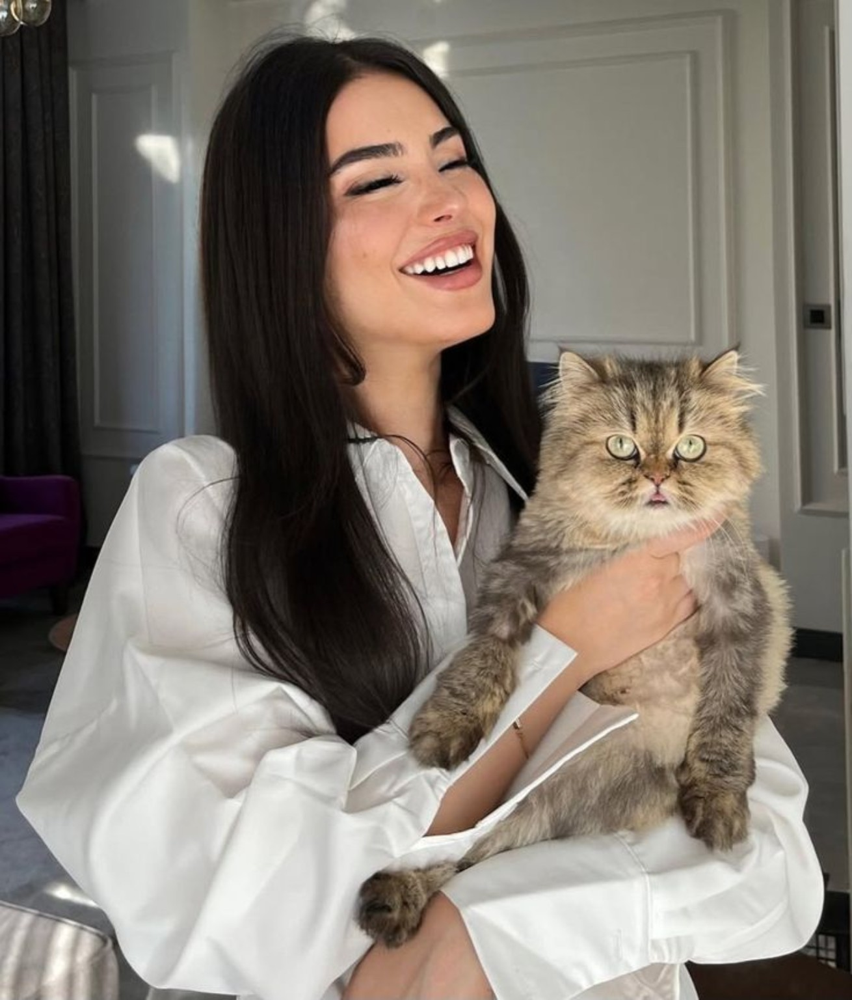

✧
Diplomática
Prefere observar, escolher as palavras e compreender as intenções antes de agir.
Uma presença delicada, uma mente estratégica e uma curiosidade que nunca se contenta com a superfície. Por trás da elegância, há perguntas que ainda aguardam respostas.
❀ Conhecimento · Ambição · Discrição ❀


Rebecca Devereaux tem 25 anos e pertence à elite influente de Lythael, sem possuir sangue real. Cresceu em uma família próxima, cercada de afeto e de expectativas à altura do nome que carrega. Diplomática e ambiciosa, sabe que a informação pode abrir portas que a posição social, sozinha, jamais abriria.
Nem tudo precisa ser dito para ser compreendido — e nem tudo que é compreendido precisa ser revelado.
Prefere observar, escolher as palavras e compreender as intenções antes de agir.
Seu desejo de avançar está ligado à busca por conhecimento e por verdades escondidas.
Apresenta uma postura agradável em público, mas preserva uma parte de si que poucos conseguem conhecer.
“Nem toda verdade precisa ser encontrada em voz alta.”Frase decorativa · não canônica
Rebecca pode ceder quando considera algo pouco importante, defender suas escolhas com calma quando necessário ou manter sua posição sem transformar tudo em confronto. Sua reação depende da situação e dos riscos envolvidos.

A botânica faz parte dos interesses de Rebecca. O modo como esse interesse começou, sua prática e a extensão de seus conhecimentos permanecem em aberto para serem definidos durante o RPG.
BotânicaObservaçãoConhecimentoEscreve poemas, e seu estilo pode variar conforme o estado emocional.
O piano e o violino fazem parte de seus interesses musicais.
Gosta de preparar comidas caseiras e reconfortantes, longe da formalidade dos salões.
A curiosidade e a busca por respostas estão entre os motores centrais de sua ambição.
Uma família próxima, marcada pelo carinho e pelo peso de representar um nome influente.
Influente e diplomático, preocupa-se com a reputação e o prestígio da família. Sua relação com Rebecca é afetuosa, embora suas expectativas possam pesar sobre as escolhas dela.
Refinada e estratégica, administra a casa e suas alianças sociais. Ama a filha e espera que ela compreenda a responsabilidade do nome que carrega.
Rebecca é a herdeira dos interesses políticos e comerciais da família. O vínculo familiar é amoroso, mas isso não elimina as diferenças entre aquilo que esperam dela e aquilo que deseja para si.
“Algumas portas se abrem por tradição. Outras precisam ser atravessadas por vontade própria.”Frase decorativa · não canônica
Rebecca participa da Seleção por razões políticas e pessoais. Sua posição social e seu desejo de ampliar o próprio conhecimento podem coexistir, mas seus objetivos concretos ainda não foram definidos.
A possibilidade de romance permanece aberta, sem par ou interesse amoroso estabelecido.

Cinza, de pelagem longa e volumosa, olhos verdes claros e uma presença tão elegante quanto independente. É apegado a Rebecca, gosta de dormir no colo dela, mas também valoriza seu espaço e prefere sua própria caminha.
Rebecca o encontrou ainda na adolescência, sozinho em seu quarto. Ele havia sido deixado como presente por um admirador secreto, cuja identidade ela desconhece. Nenhum outro objeto o acompanhava.
O nome foi escolhido por sua ligação com a poesia. Seu significado pessoal exato permanece em aberto.
Olhos verde-clarosPelagem cinzaAfetuoso e independenteRetratos e referências visuais para compor o universo de Rebecca.



Há uma parte da história de Rebecca que não será explicada aqui. Seu vínculo com uma instituição de pesquisa ligada aos registros da pandemia, assim como o encobrimento de informações do qual participou, permanecerá reservado para ser revelado durante o RPG.
Este espaço é deliberadamente incompleto. Nenhum documento, nome, motivo ou consequência adicional será presumido antes de ser definido pela autora.